Overview
Day 1
Day 2
Day 3
Day 4
Day 5
SPM-2026-0416-CO
AN UNUSUAL COMBINATION.
Observation period: 5 days
Start Date: 2026.04.16
End Date: 2026.04.20
Record: 5 times

| Zone | Element | Observation |
|---|---|---|
| A | Material | Composed of metal (thermos) and plush fabric (outer bag) |
| B | Condition | Visibly worn; consistent with prolonged daily use |
| C | Estimated value | Low monetary value based on visual assessment |
Conclusion
This combination of a thermos and a pen bag had been present for over a month at the time of observation. The cluster appeared to be frequently moved by parties unknown, yet no owner ever came forward to claim it. It is one of the more ambiguous specimens in this study — present, displaced, and unresolved.
SPM-2026-0416-CO
DAY 1
Record
The object cluster was discovered on a desk in the print room, Room 304, Building 1111. The primary object was encased within a plush fabric bag; its contents were not visible at the time. No owner was present in the vicinity, and there was no indication of when the objects had been left.
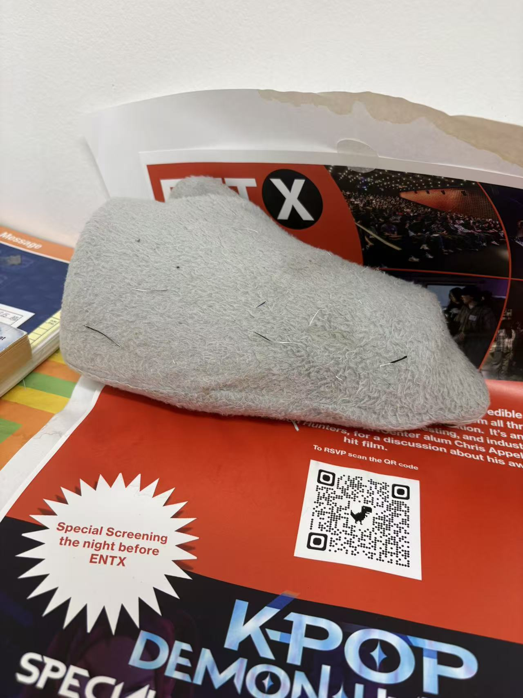
Documentation was completed without disturbing the arrangement. The specimen was left in situ.
SPM-2026-0416-CO
DAY 2
Record
Upon returning to the site, the cluster had been displaced from its original position — moved by an unknown party. The relocation had partially exposed the base of the object inside the bag, revealing what appeared to be the bottom of a thermos: a mixed construction of plastic and metal. The bag itself was not opened at this stage.
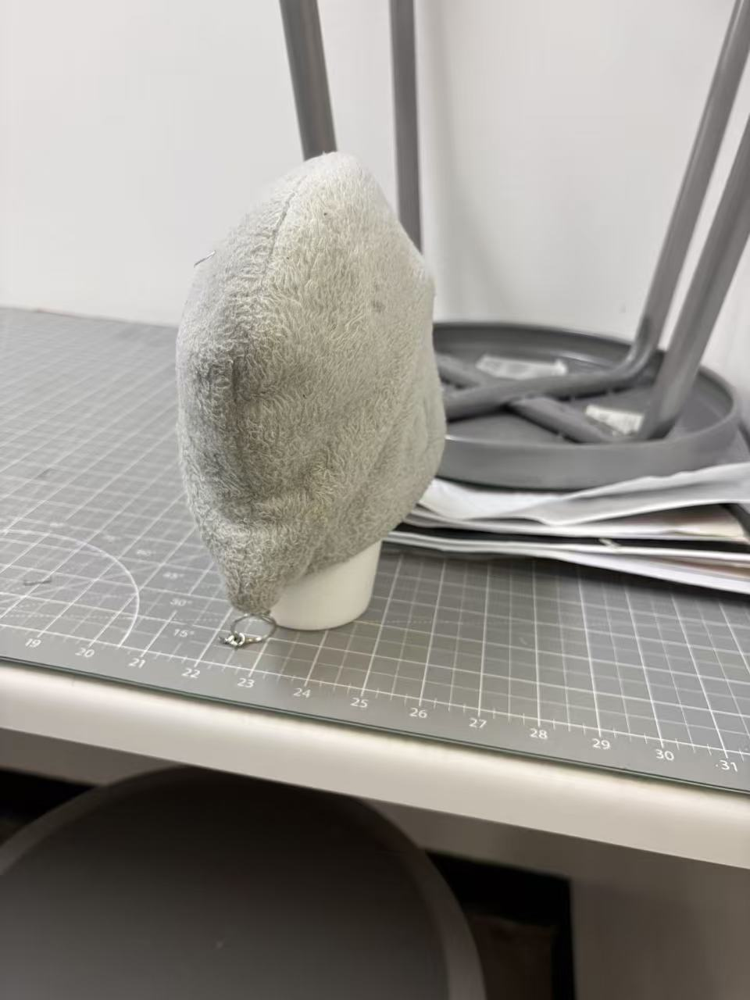
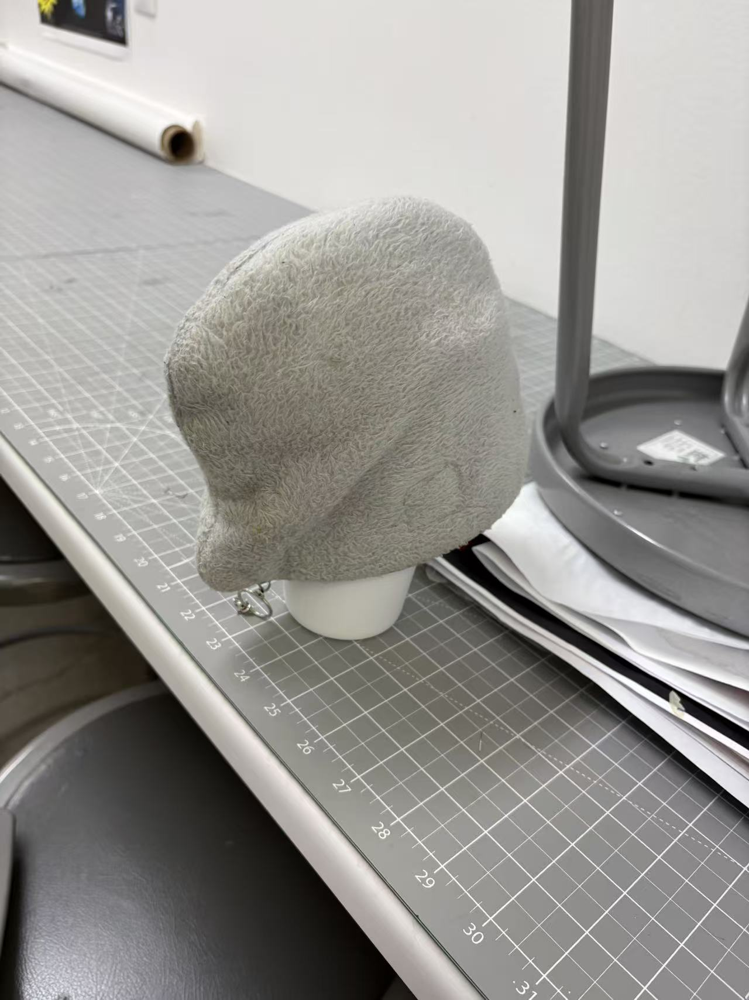
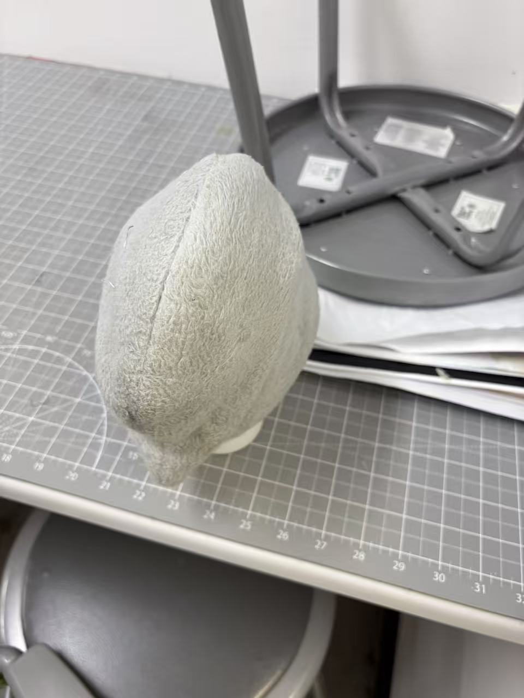
SPM-2026-0416-CO
DAY 3
Record
On this visit, the observer opened the plush bag for the first time. The thermos inside was fully visible for the first time since observation began.
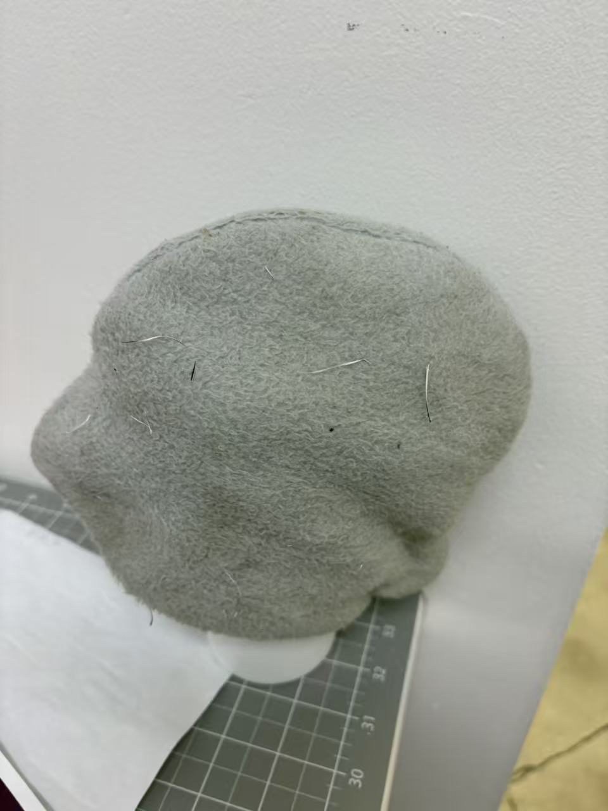
The thermos was identified as a product of the brand YETI. Its exterior shell is white spray-painted metal. Upon opening, liquid was confirmed to be present — the thermos had not been emptied before being left behind.
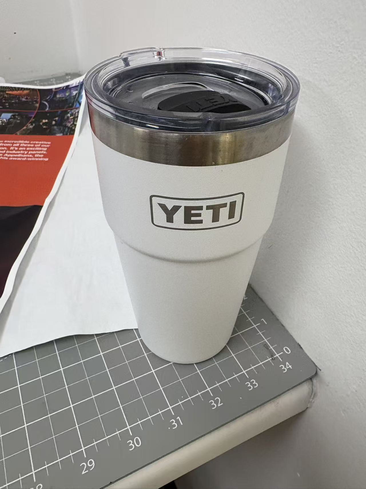
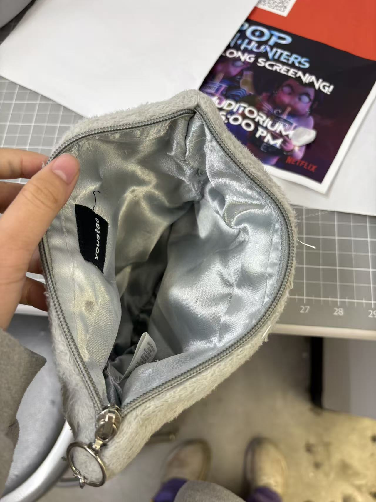
SPM-2026-0416-CO
DAY 4
Record
The cluster had been moved again — its third change of position across the observation period. The frequency of relocation, paired with the continued absence of any owner, led the researcher to suspect an undisclosed party actively managing the objects. As an experiment, a note reading "Who's this?" was placed beneath a packet of tissues left beside the cluster, in the hope of eliciting a response.
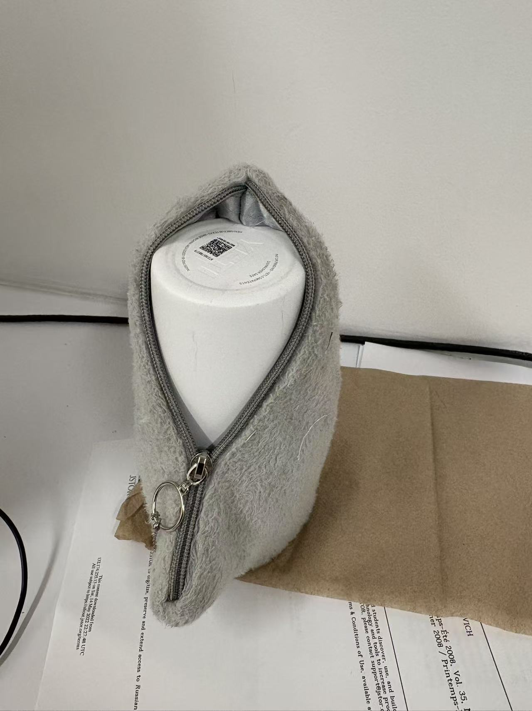
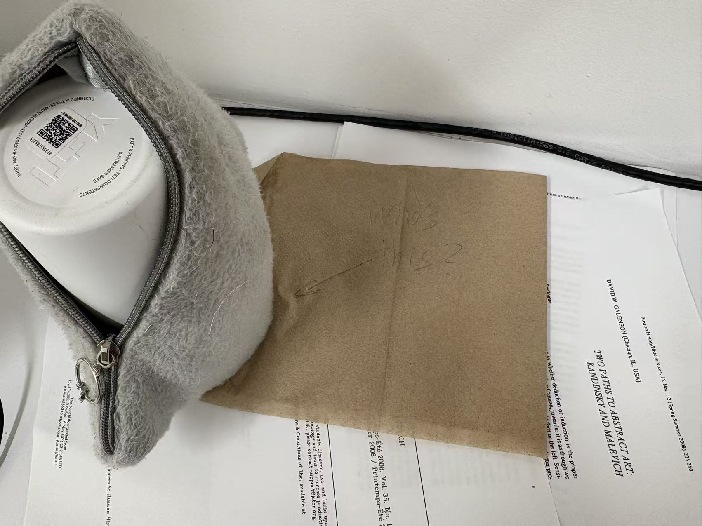
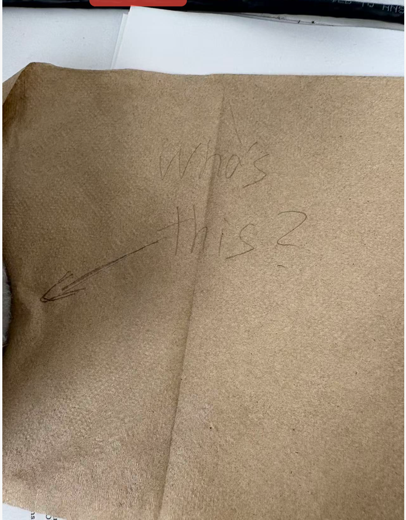
SPM-2026-0416-CO
DAY 5
Final Record
Upon return, the tissue packet had been removed — likely by a member of facilities staff. The note placed beneath it was gone along with it. The object cluster itself remained in place, undisturbed and unclaimed.
No response was received. The experiment yielded no result. The observation period is hereby concluded.
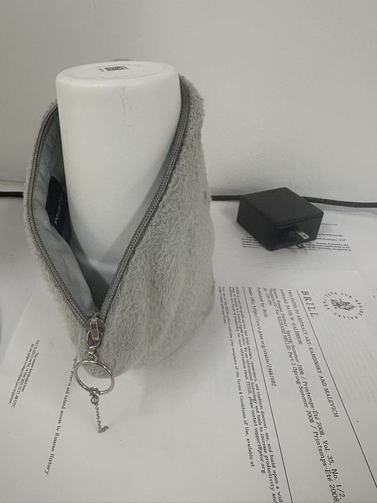
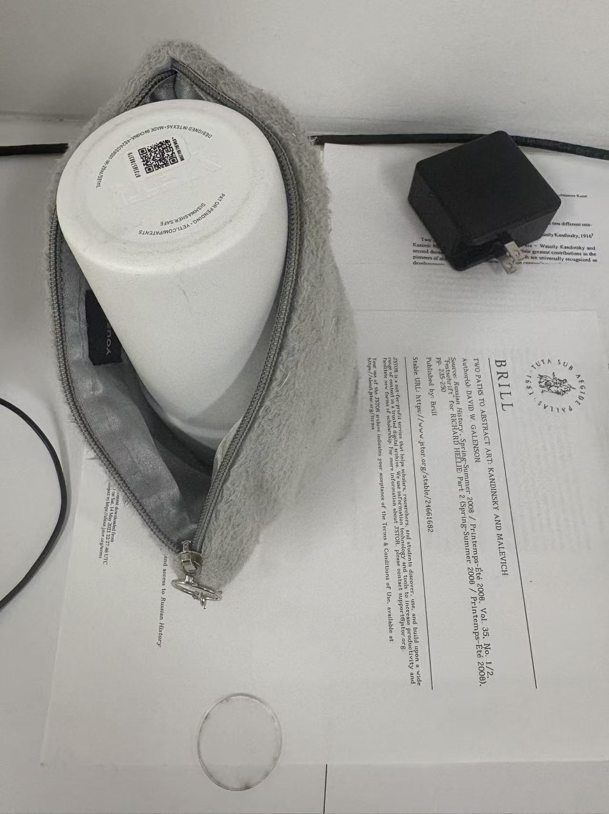